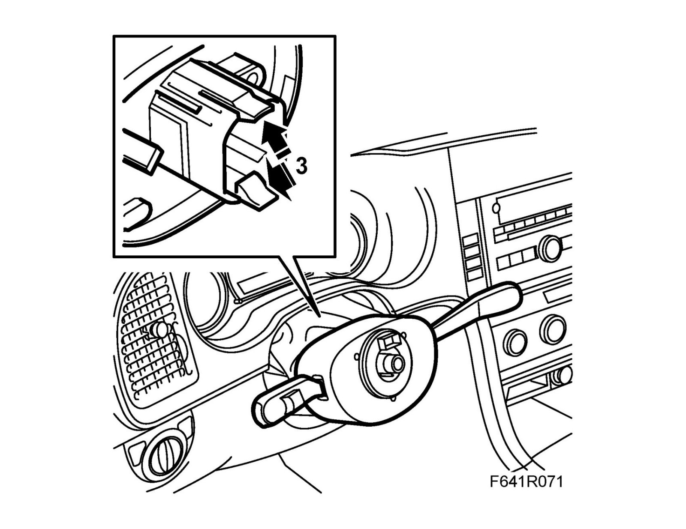
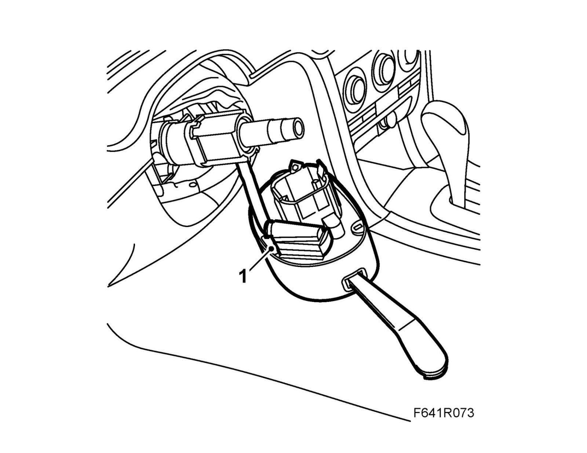
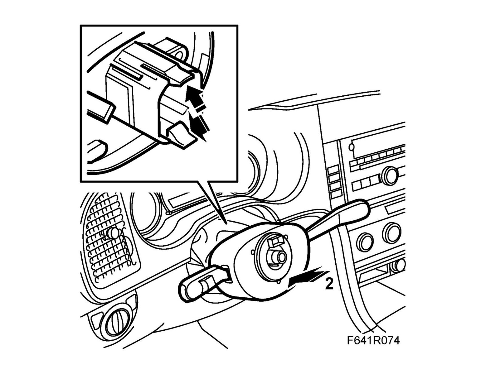
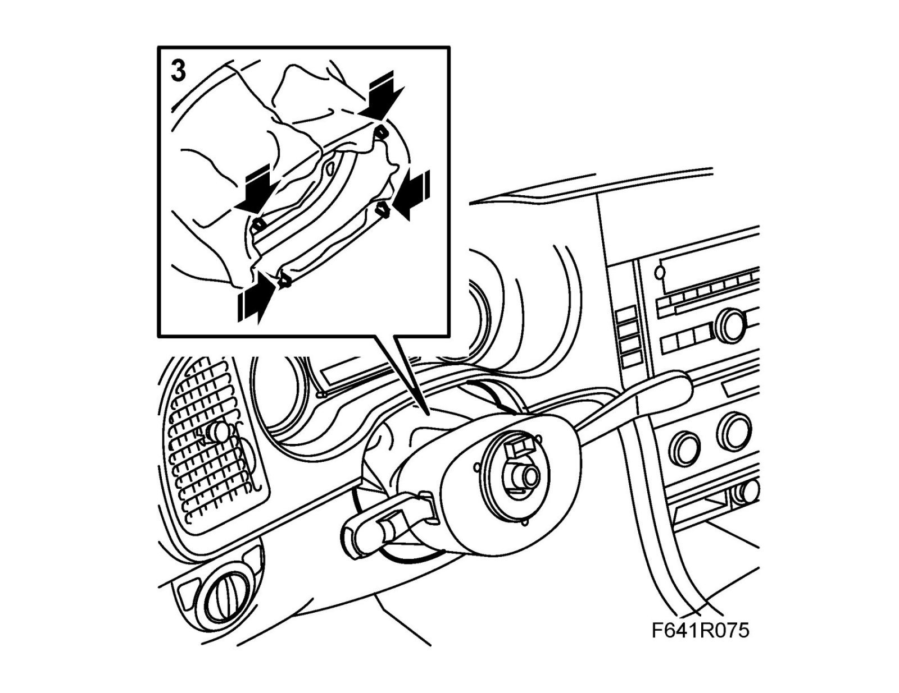
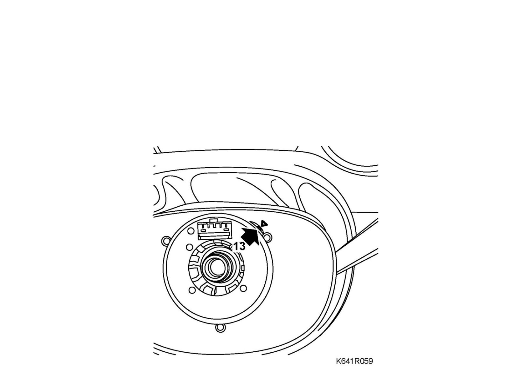

Steering Column Control Module: Service and Repair
Column Integration Module, CIM (703)Applies only to the SE, GB and DE markets: Before replacing the control module, carry out regular fault tracing as per WIS and go through Checklist prior to CIM replacement.
To remove
1. Carry out "Procedure before removing the control module".
Remove the steering wheel.
2. Remove the gaiter from the control module and press it against the instrument panel.
3. Remove the control module from the steering shaft. Press in the steering column while pulling the control module outwards.

Important
Take care when releasing the locking mechanism on the connector so as not to damage the connector. Pull the halves straight apart to avoid bending the pins. For further information regarding connectors, refer to Connectors, handling and inspection.
4. Unplug the connector and remove the clip.
To fit
Important
Take care when plugging in the connector so as not to damage or press out the pins/sleeves in the connector. For further information regarding connectors, refer to Connectors, handling and inspection.
1. Plug in the control module connector and fit the clip.

2. Fit the control module to the steering shaft.

3. Fit the gaiter to the control module.

4. Make sure that the wheels are pointing straight ahead. Turn the contact roller so that the pointer is in the middle of the indicator opening.

5. Fit the Steering wheel.
6. Carry out "Procedure after changing the control module".